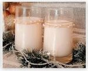
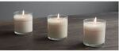
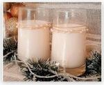
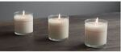

Pippi Candles
Beneficios de nuestros productos
Una de las grandes ventajas de la vela de soya para con las terapias es su versatilidad, pues es con ellas que se pueden hacer excelentes masajes de relajación, pues estas no son toxicas, tienen larga durabilidad, queman a baja temperatura lo que ayuda a preservar la salud y los beneficios de las fragancias de aceites esenciales, además son una excelente alternativa para el medio ambiente pues son biodegradables.
Otro aspecto a considerar en las velas de soya es la armonía que esta produce a través de terapias de relajación y masaje con finos aceites vegetales de coco, karité y sésamo con notas olfativas tropicales, herbales, de frutos rojos o Vainilla, un masaje cálido que junto con los sentidos espirituales y emocionales producidos por la estimulación de los sentidos y el toque cálido de los aceites calientes, hacen de este ritual una experiencia única, envolviendo al paciente en un elixir de relajación y suavidad.
Tienda online:
 


